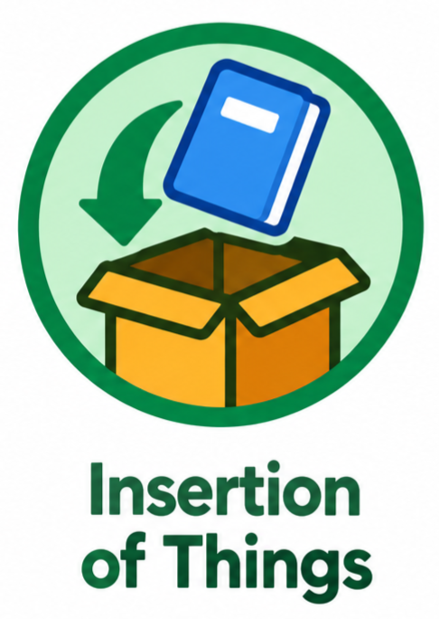

Information
My First Project
A simple html created that you can input your information.
MY WORK & CLASS ACTIVITIES
A collection of activities and projects from my learning journey. Replace these sample cards with your actual prelim-to-final activities.
A simple html created that you can input your information.
Listing of items that has step by step or ingrendients.

Inserting images, Audio and Video. Also Playable Inserted Audios and Video